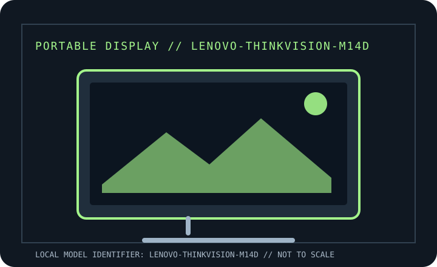

[ INDIVIDUAL COMPONENT // DISPLAYS ]
Lenovo ThinkVision M14d
Manufacturer-specific portable monitor record. Verify the full rear-label SKU, region and documentation revision before connecting power or relying on a maximum mode.

IDENTIFICATION: Portable computer monitor SKU with a unique model record. Match the rear label and regional suffix to the manufacturer's product page/manual; similarly named models may use different ports or power behavior.
Specifications
| Catalog subcategory | Portable displays |
|---|---|
| Exact product / family | Lenovo ThinkVision M14d |
| Panel / diagonal | 14-inch IPS LCD, 16:10 |
| Native resolution | 2240 × 1400 |
| Native refresh / maximum | 60 Hz |
| Brightness (typical) | 300 cd/m² typical |
| USB-C interface | Two USB-C 3.2 Gen 1 ports with DisplayPort 1.2 Alt Mode; USB-C supports power input and up to 65 W power pass-through to a compatible notebook when an appropriate adapter is connected. |
| HDMI interface | No HDMI input. Use USB-C DP Alt Mode or a compatible active adapter from the host; HDMI cannot connect directly. |
| Power / USB Power Delivery | USB-C bus power; power pass-through supports up to 65 W host charging subject to the input adapter, cable and host negotiation. Monitor-only consumption is about 7.5 W. |
| OSD / controls | Physical OSD controls at the display for brightness and settings; no required display driver for normal video. |
| Stand / mounting | Built-in adjustable tilt stand; no VESA mount or HDMI stand/accessory assumed. |
Host, OSD & compatibility notes
Requires a USB-C host supporting DisplayPort Alt Mode. Compatible systems may include Windows/Linux/macOS with suitable USB-C video output; charging pass-through is subject to USB-C PD support and Lenovo adapter requirements.
Model-specific caveat: M14d is the 2240 × 1400 model, not the older 1920 × 1080 ThinkVision M14. Power sharing can reduce available host charge rate; check full machine type and adapter wattage.
Field use & preservation
Protect the LCD/touch surface in transport, avoid loading the USB-C or HDMI sockets sideways, and test video, power and touch (where fitted) as separate signal paths. Keep the correct cable and power adapter with the monitor.
Record the rear-label model/serial, included cover/stand, cable and adapter ratings, signal timing, OSD configuration, panel condition and any repaired or substituted accessories. Do not open the enclosure; use the manufacturer's service procedure and a qualified technician.
Manufacturer documentation & sources
- Lenovo — ThinkVision M14d product overviewOfficial product listing for the M14d and its display/interface features.
- Lenovo Support — ThinkVision M14d overviewManufacturer support resource for product documentation and model-specific support.